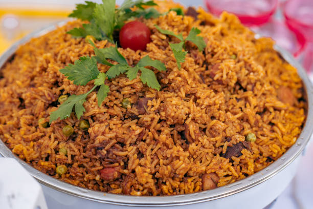

Jollof Rice

Description
This is a West African dish originally from Senegal. This is popular in Ghana and Nigera, also considered as a spicy food. This dish has sparked a friendly rivalry between Ghana and Nigerian and this still continues. This dish consist of rice cooked with tomato sauce or stew
Ingredients
- 1 big Habenaro Pepper
- 1 large red bell pepper
- 2 large Roma tomato
- 1 large onion
- 1 tablespoon minced ginger
- 4 cloves of peeled garlic
- 1/3 cup of olive oil
- 1 teaspoon salt, other natural spices like Maggi cube
- 1/4 cup tomato paste
- 1 teaspoon curry powder
- 2 1/4 cups pf rice
- 1 bay leaf
- 1 cup of chicken (prefered meat) stock
Steps
- Blend tomatoes, peppers, and onions into a smooth paste.
- Heat the vegetable oil in a pot and add the blended mixture. Fry until the oil separates from the paste.
- Add curry powder, and salt. Stir and cook for another 2 minutes.
- Pour in the chicken or vegetable stock and bring it to a boil.
- Rinse the rice to remove excess starch and add it to the sauce. Stir well.
- Lower the heat, cover the pot, and let the rice cook until tender. Add more stock if needed.
- Once the rice is cooked, fluff it with a fork and serve hot.
Back to Home